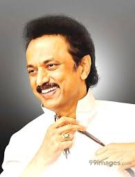

Narendra Modi
Modi, a leader of the Bharatiya Janata Party, was the Chief Minister of Gujarat from 2001 to 2014 and is the Member of Parliament from Varanasi.
- Born: September 17, 1950 (age 64), Vadnagar
- Education: Gujarat University (1983), University of Delhi (1978)
- Awards: CNN-IBN Indian of the Year
Edappadi Karuppa Palaniswami
Edappadi Karuppa Palaniswami Popularly Known as E.P.S, is an Indian politician serving as the 7th and current Chief Minister
of Tamil Nadu since 16 February 2017. He is the joint coordinator of the All India Anna Dravida Munnetra Kazhagam.
- Born:12 May 1954 (age 66 years), Samalapuram
- Education:Sri Vasavi College (1976)
- Office: Chief Minister of Tamil Nadu since 2017

Muthuvel Karunanidhi Stalin is an Indian politician from Tamil Nadu and the opposition leader in the Tamil Nadu Legislative Assembly since 25 May 2016. He is the son of the former Chief Minister of Tamil Nadu, M. Karunanidhi. He's also the President of the Dravida Munnetra Kazhagam political party.